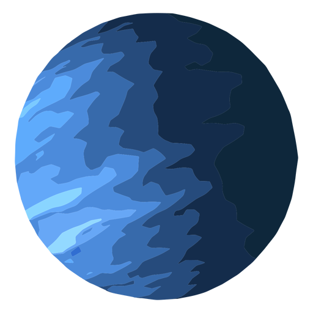

Uranus | Уран
Седьмая планета солнечной системы - Уран.
Седьмая по счету и третья по размеру планета, радиус которой составляет 25267 км. Справедливо считается самой холодной планетой среди остальных, температура достигает -224 градусов по Цельсию. Продолжительность года — 30 685 суток в земном исчислении (почти 84 года), сутки же ненамного меньше земных – 17 с небольшим часов. Из-за сильной наклонности оси планеты, иногда создается впечатление, будто она не вращается, как остальные небесные тела нашей системы, а катится, подобно шару. Это может наблюдать любой, кого интересует астрономия, геометрическая модель солнечной системы наглядно продемонстрирует этот эффект.
Спутников у него гораздо меньше, чем у соседнего Сатурна, всего 27. Наиболее известны Титания, Ариэль, Оберон, Умбриэль и Миранда. Они не настолько крупны, как спутники.
Примечательно, что ведя наблюдения за Ураном в свой телескоп, астроном Уильям Гершель сначала не понял, что он наблюдает за планетой, будучи уверен, что он видит комету.
Created by:
website: Drobkov Kirill
information: Pilyavets Dominik